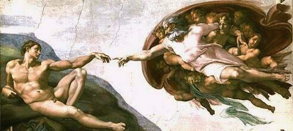

Me propongo hacer un somero comentario del Génesis, primer libro de la Biblia, e ir resaltando las incongruencias y contradicciones que en él aparecen, no pretende ser un estudio detallado, sólo aquellos detalles que llaman mi atención en una primera lectura. Diré que ni considero, ni puedo considerar la Biblia, ni el Génesis como la palabra de Dios.
Considero que Dios no es más que una fantasía de la mente humana, una fantasía inventada interesadamente por unos hombres ignorantes, pero no más ignorantes que cualquiera de los hombres de su tiempo. Aún ignorantes o no, crean un dios, escriben un cuento infantil, un cuento muy cruel, declaran que es la palabra de Dios, lo declaran dogma, artículo de fe y lo imponen por la fuerza. A partir de ahí se remiten a este conjunto de cuentos, fábulas, y mentiras como prueba de que el Dios del que hablan existió y existe. Adornan a ese dios con todas las virtudes humanas que se les ocurren, pero en la Biblia el único dios que se manifiesta es el Dios inculto e ignorante, el Dios cruel y bárbaro, tan inculto y tan bárbaro como los hombres que lo crearon.
Comentarios
Comments powered by Disqus